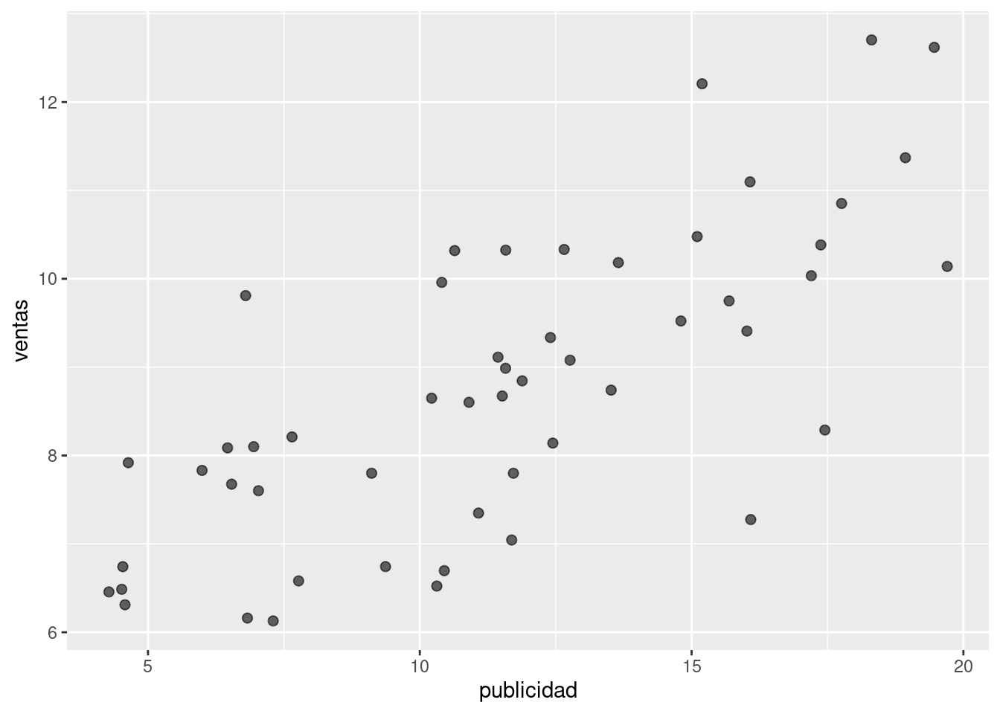
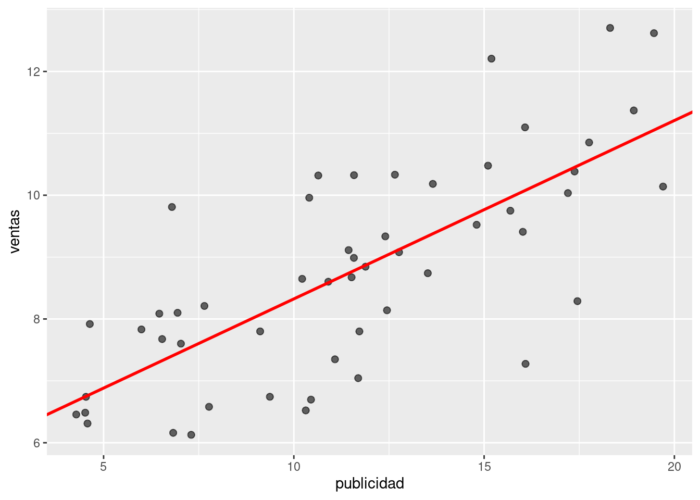
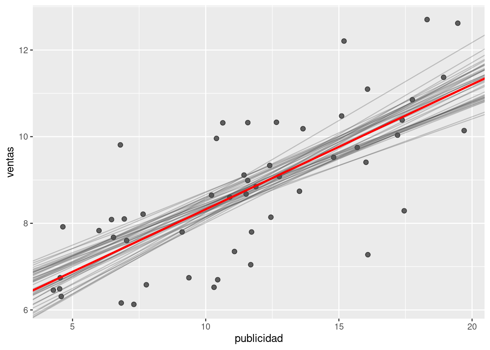
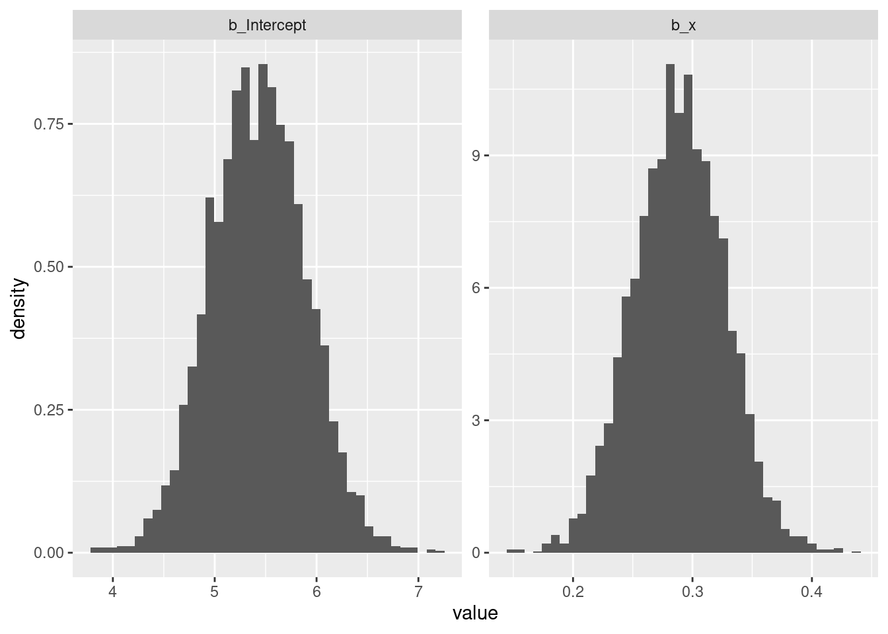
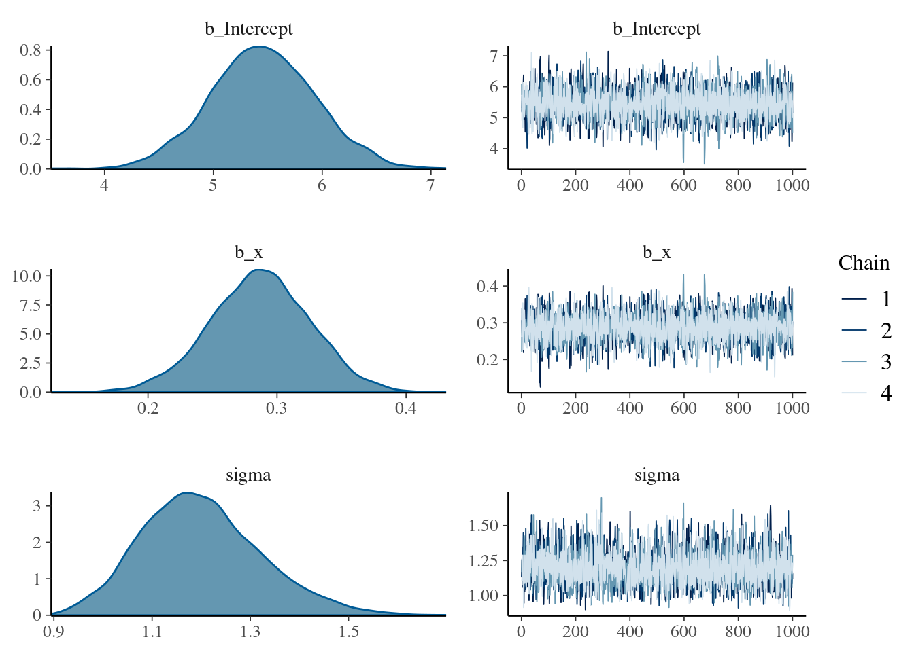
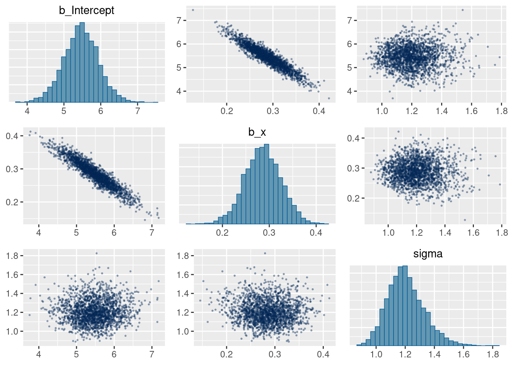
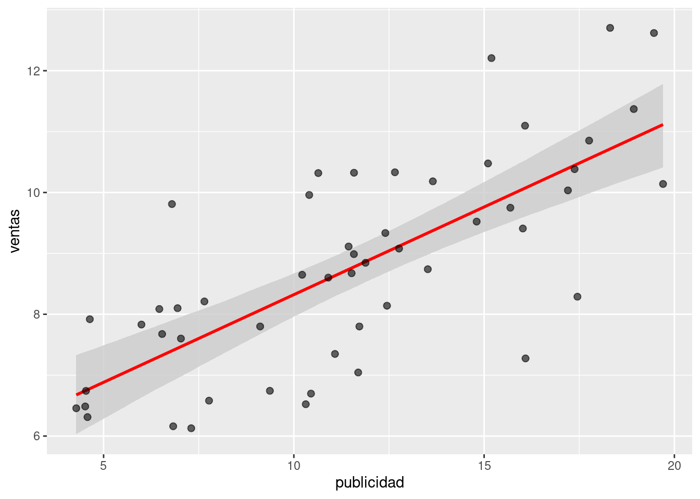
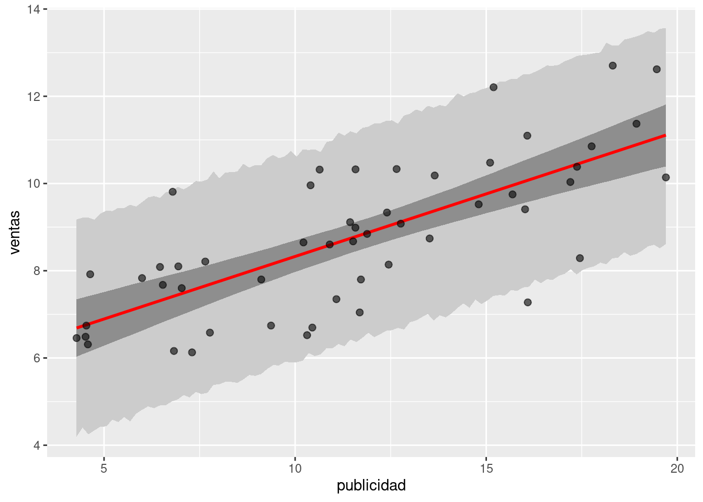

# ~~~~~~~~~~~~~~~~~~~~~~~~~~~~~~~~~~~~~~~~~~~~~~~~~~~~~~~~~~~~~~~~~~~~~~~~~~~~~
# Cargar librerías necesarias
# ~~~~~~~~~~~~~~~~~~~~~~~~~~~~~~~~~~~~~~~~~~~~~~~~~~~~~~~~~~~~~~~~~~~~~~~~~~~~~
library(brms)
library(dplyr)
library(ggplot2)
library(readr)
# ~~~~~~~~~~~~~~~~~~~~~~~~~~~~~~~~~~~~~~~~~~~~~~~~~~~~~~~~~~~~~~~~~~~~~~~~~~~~~
# Ejercicio 1
# ~~~~~~~~~~~~~~~~~~~~~~~~~~~~~~~~~~~~~~~~~~~~~~~~~~~~~~~~~~~~~~~~~~~~~~~~~~~~~
# Leer los datos desde el repositorio
df_sales <- read_csv(
"https://raw.githubusercontent.com/estadisticaunr/estadistica-bayesiana/main/datos/sales.csv"
)
# Explorar los datos
ggplot(df_sales) +
geom_point(aes(x = x, y = y), alpha = 0.6, size = 2) +
labs(x = "publicidad", y = "ventas")
# Crear modelo con brms
# refresh = 0 es para que no muestre los mensajes del sampler
modelo_1 <- brm(y ~ x, df_sales, refresh = 0)
# Mostrar salida por defecto
modelo_1 Family: gaussian
Links: mu = identity; sigma = identity
Formula: y ~ x
Data: df_sales (Number of observations: 52)
Draws: 4 chains, each with iter = 2000; warmup = 1000; thin = 1;
total post-warmup draws = 4000
Population-Level Effects:
Estimate Est.Error l-95% CI u-95% CI Rhat Bulk_ESS Tail_ESS
Intercept 5.44 0.47 4.54 6.39 1.00 3850 2801
x 0.29 0.04 0.21 0.36 1.00 3935 2843
Family Specific Parameters:
Estimate Est.Error l-95% CI u-95% CI Rhat Bulk_ESS Tail_ESS
sigma 1.19 0.12 0.99 1.47 1.00 3922 2918
Draws were sampled using sampling(NUTS). For each parameter, Bulk_ESS
and Tail_ESS are effective sample size measures, and Rhat is the potential
scale reduction factor on split chains (at convergence, Rhat = 1).# Obtener las muestras del posterior como un data frame
df_draws_1 <- as_draws_df(modelo_1)
# Calcular la media a posteriori del intercepto y la pendiente
intercept_mean <- mean(df_draws_1$b_Intercept)
slope_mean <- mean(df_draws_1$b_x)
# Utilizar estos dos valores para graficar la media de la recta de regresión
ggplot(df_sales) +
geom_point(aes(x = x, y = y), alpha = 0.6, size = 2) +
geom_abline(
intercept = intercept_mean,
slope = slope_mean,
linewidth = 1,
color = "red"
) +
labs(x = "publicidad", y = "ventas")
# Graficar rectas utilizando algunas muestras del posterior
# Da una idea de la variabilidad en la estimación
ggplot(df_sales) +
geom_point(aes(x = x, y = y), alpha = 0.6, size = 2) +
geom_abline(
aes(intercept = b_Intercept, slope = b_x),
alpha = 0.3,
color = "gray30",
data = df_draws_1[sample(nrow(df_draws_1), 40), ]
) +
geom_abline(
intercept = intercept_mean,
slope = slope_mean,
linewidth = 1,
color = "red"
) +
labs(x = "publicidad", y = "ventas")
# Lo siguiente es un enfoque posible, y bastante manual, para graficar
# los posteriors marginales del intercepto y la pendiente
df_draws_long_1 <- df_draws_1 |>
select(b_Intercept, b_x) |>
tidyr::pivot_longer(c("b_Intercept", "b_x"), names_to = "parametro")
ggplot(df_draws_long_1) +
geom_histogram(aes(x = value, y = after_stat(density)), bins = 40) +
facet_wrap(~ parametro, scales = "free")
# ~~~~~~~~~~~~~~~~~~~~~~~~~~~~~~~~~~~~~~~~~~~~~~~~~~~~~~~~~~~~~~~~~~~~~~~~~~~~~
# Ejercicio 2
# ~~~~~~~~~~~~~~~~~~~~~~~~~~~~~~~~~~~~~~~~~~~~~~~~~~~~~~~~~~~~~~~~~~~~~~~~~~~~~
mean_y <- mean(df_sales$y) # ~ 8.75
# Especificar los priors
priors <- c(
prior(normal(8.75, 10), class = "Intercept"),
prior(normal(0, 0.5), class = "b", coef = "x"),
prior(normal(0, 5), class = "sigma") # Opcional: lb = 0
)
# Especificar y ajustar el modelo
modelo_2 <- brm(y ~ x, df_sales, prior = priors, refresh = 0)
modelo_2 Family: gaussian
Links: mu = identity; sigma = identity
Formula: y ~ x
Data: df_sales (Number of observations: 52)
Draws: 4 chains, each with iter = 2000; warmup = 1000; thin = 1;
total post-warmup draws = 4000
Population-Level Effects:
Estimate Est.Error l-95% CI u-95% CI Rhat Bulk_ESS Tail_ESS
Intercept 5.45 0.47 4.52 6.38 1.00 3825 2627
x 0.29 0.04 0.21 0.36 1.00 3778 2648
Family Specific Parameters:
Estimate Est.Error l-95% CI u-95% CI Rhat Bulk_ESS Tail_ESS
sigma 1.20 0.13 0.98 1.49 1.00 3625 2764
Draws were sampled using sampling(NUTS). For each parameter, Bulk_ESS
and Tail_ESS are effective sample size measures, and Rhat is the potential
scale reduction factor on split chains (at convergence, Rhat = 1).# Lo siguiente permite obtener un resumen de los priors utilizados
prior_summary(modelo_2) prior class coef group resp dpar nlpar lb ub source
(flat) b default
normal(0, 0.5) b x user
normal(8.75, 10) Intercept user
normal(0, 5) sigma 0 user# {brms} provee funciones para generar visualizaciones frecuentemente utilizadas
# Muestra los posteriors marginales y las trazas de las cadenas
plot(modelo_2)
# Muestra los posteriors marginales y graficos de dispersión
# para evaluar la relación entre los parámetros
pairs(modelo_2, off_diag_args = list(size = 1/3, alpha = 1/3))
# Crear nuevo conjunto de datos para obtener predicciones (y visualizaciones)
x_min <- min(df_sales$x)
x_max <- max(df_sales$x)
df_new <- data.frame(x = seq(x_min, x_max, length.out = 100))
# Predecir la media (obtener posterior de mu)
df_new_mean <- fitted(modelo_2, newdata = df_new) |>
as.data.frame() |>
bind_cols(df_new) |>
select(estimate = Estimate, lower = Q2.5, upper = Q97.5, x)
# Mostrar el intervalo de credibilidad para la recta de regresión
ggplot(df_new_mean) +
geom_ribbon(
aes(x = x, ymin = lower, ymax = upper),
fill = "grey80",
alpha = 0.8
) +
geom_line(aes(x = x, y = estimate), linewidth = 1, color = "red") +
geom_point(aes(x = x, y = y), alpha = 0.6, size = 2, data = df_sales) +
labs(x = "publicidad", y = "ventas")
# Predecir nuevas observaciones (obtener predictiva a posteriori)
df_new_predict <- predict(modelo_2, newdata = df_new) |>
as.data.frame() |>
bind_cols(df_new) |>
select(estimate = Estimate, lower = Q2.5, upper = Q97.5, x)
# Mostrar el intervalo de credibilidad para la recta de regresión
# y para nuevas observaciones
ggplot(df_new_mean) +
geom_ribbon(
aes(x = x, ymin = lower, ymax = upper),
fill = "grey80",
data = df_new_predict
) +
geom_ribbon(
aes(x = x, ymin = lower, ymax = upper),
fill = "grey50",
alpha = 0.8
) +
geom_line(aes(x = x, y = estimate), linewidth = 1, color = "red") +
geom_point(aes(x = x, y = y), alpha = 0.6, size = 2, data = df_sales) +
labs(x = "publicidad", y = "ventas")